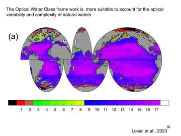

Home › A · Light in water & IOPs
Light entering the sea is absorbed and scattered. This module defines the quantities that describe those two processes (a, β, b, c), explains why they add up, and introduces the water types (Case 1, Case 2, optical classes) used to choose a model.
Plain words: what happens to a photon in the sea
A photon in water has two possible fates in a short path: it can be absorbed (its energy becomes heat or chemical energy) or scattered (it changes direction). The lecture (slide 5) writes this as the radiative transfer equation: along a path dr the radiance L is reduced by absorption and scattering out (together c = a + b) and increased by scattering in from all other directions, plus internal sources S.
Note: the slide prints a factor 2π in front of the integral. The textbook (Radiative Transfer Equations) writes the in-scattering term as ∫β L dω′ over 4π without it; we keep the slide form for the course and mention the difference.
The two main IOPs and what is derived from them
Slide 17: the two main IOPs are the absorption coefficient a (m⁻¹) and the volume scattering function β(ψ,λ) (m⁻¹ sr⁻¹, the angular distribution of scattered power). Everything else follows (slide 18):
Numerical example. With c = 0.5 m⁻¹ a collimated beam keeps e−0.5 = 0.607 of its power after 1 m (L = L₀e−cr, verified in Python).
IOP versus AOP, and additivity
IOPs depend only on the constituents and not on illumination: for one water body they are the same for a Sun at the zenith and at 60° (slide 11). AOPs (Kd, reflectance, …) depend on the medium and on the light field (textbook: Apparent Optical Properties, oceanopticsbook.info). IOPs are additive:
This allows a separate model for each constituent (modules B–D) and is why the lecture goes constituent by constituent.
Case 1, Case 2 and optical classes
Morel & Prieur (1977) separated waters in which phytoplankton dominate the optics (Case 1) from those in which other constituents matter (Case 2). The modern wording (textbook, Classification Schemes): Case 1 = optical properties determined primarily by phytoplankton and co-varying CDOM and detritus; Case 2 = everything else. Slide 15 shows that Case 1 covers 81–87 % of the ocean depending on the season; slide 16 introduces 17 optical water classes (Loisel et al., 2023) for a finer description.
Worked example, quick Q&A and memory hooks
a = 0.08 m⁻¹, b = 0.12 m⁻¹ ⇒ c = 0.20 m⁻¹. Over 5 m the beam keeps e−1.0 = 0.368 = 37 %. If only absorption acted (a = 0.08), 67 % would remain: scattering out of the beam is the larger loss here.
Quick Q&A
A: Because scattered photons are also removed from the beam; it measures c = a + b (slide 60).
A: No: it depends on the Sun and the clouds; it is not even a good AOP (textbook).
Memory hooks
- IOPs = what the water is; AOPs = what the light does in it.IOP là bản chất nước; AOP là phản ứng của ánh sáng.
- Case 1/2 = co-variation, not geography.Case 1/2 là đồng biến, không phải địa lý.
Lecture slides for this module (Loisel, Marine Optics)
10 slides of the lecture “Marine Optics” (H. Loisel, LOG). Numbers refer to the slide number in the file. Click a page to enlarge; browse all pages.





Exam checklist — points you must mention
- Write the RTE of slide 5 and name the terms; state c = a + b.
- Give the units of a, β, b, c and the integrals defining b, b_f, b_b.
- State additivity for a, b and b_b.
- Say why IOPs do not depend on the Sun angle and name two AOPs.
- Define Case 1 / Case 2 (co-variation) and say why “Case 2 = coastal” is wrong (slide 15).
- c = a + b; β (m⁻¹ sr⁻¹) là hàm tán xạ thể tích; b = 2π∫β sinθ dθ.
- IOP không phụ thuộc chiếu sáng và cộng tính; AOP thì có phụ thuộc.
- Case 1 = đồng biến với thực vật phù du; Case 2 = còn lại; 17 lớp quang học.
Practice calculations
These tools run in your browser and are checked against Python:
Lecture slides (12 slides; use ← → keys or the buttons)
Quick self-check (10 of 19 questions)
Open the full bank: 19 multiple-choice + 3 essay questions →